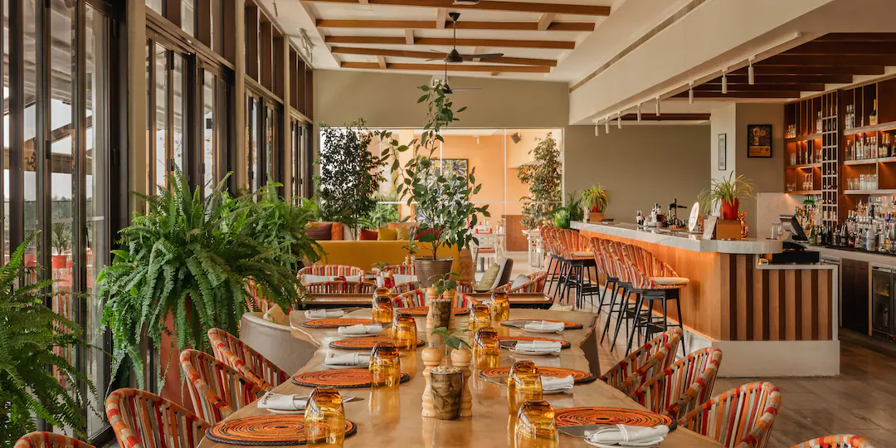

Request a QuoteNot every traveler wants the same Tanzania. Neither should every safari be the same.
Choose an idea that speaks to you, then let Voice of Trees shape the journey around you.
A starting point for travelers discovering Tanzania's safari landscapes for the first time.
Customize This JourneyA deeper safari journey inspired by Tarangire, Ngorongoro and Serengeti.
Customize This JourneyMove from Tanzania's wild landscapes to the Indian Ocean, combining safari with time in Zanzibar.
Customize This JourneyTell Voice of Trees how many days you have, what you would love to experience and how you like to travel. We'll help shape the safari, stays, transfers and Zanzibar extension around you.
Plan My Safari